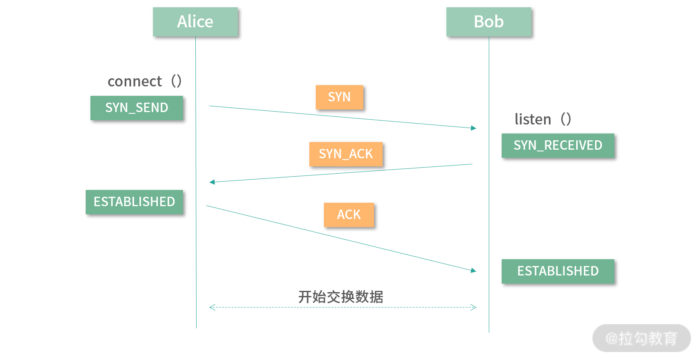
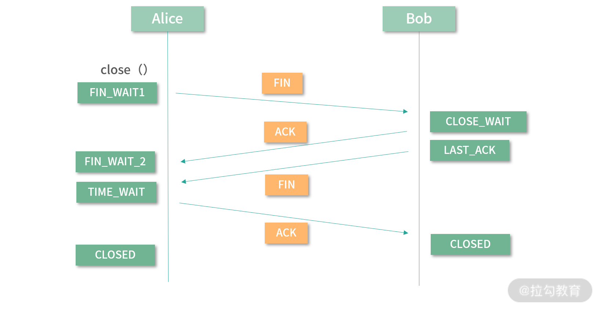

- 00 开篇词 为什么大厂面试必考操作系统？.md.html
- 00 课前必读 构建知识体系，可以这样做！.md.html
- 01 计算机是什么：“如何把程序写好”这个问题是可计算的吗？.md.html
- 02 程序的执行：相比 32 位，64 位的优势是什么？（上）.md.html
- 03 程序的执行：相比 32 位，64 位的优势是什么？（下）.md.html
- 04 构造复杂的程序：将一个递归函数转成非递归函数的通用方法.md.html
- 05 存储器分级：L1 Cache 比内存和 SSD 快多少倍？.md.html
- 05 (1) 加餐 练习题详解（一）.md.html
- 06 目录结构和文件管理指令：rm -rf 指令的作用是？.md.html
- 07 进程、重定向和管道指令：xargs 指令的作用是？.md.html
- 08 用户和权限管理指令： 请简述 Linux 权限划分的原则？.md.html
- 09 Linux 中的网络指令：如何查看一个域名有哪些 NS 记录？.md.html
- 10 软件的安装： 编译安装和包管理器安装有什么优势和劣势？.md.html
- 11 高级技巧之日志分析：利用 Linux 指令分析 Web 日志.md.html
- 12 高级技巧之集群部署：利用 Linux 指令同时在多台机器部署程序.md.html
- 12 (1)加餐 练习题详解（二）.md.html
- 13 操作系统内核：Linux 内核和 Windows 内核有什么区别？.md.html
- 14 用户态和内核态：用户态线程和内核态线程有什么区别？.md.html
- 15 中断和中断向量：Javajs 等语言为什么可以捕获到键盘输入？.md.html
- 16 WinMacUnixLinux 的区别和联系：为什么 Debian 漏洞排名第一还这么多人用？.md.html
- 16 (1)加餐 练习题详解（三）.md.html
- 17 进程和线程：进程的开销比线程大在了哪里？.md.html
- 18 锁、信号量和分布式锁：如何控制同一时间只有 2 个线程运行？.md.html
- 19 乐观锁、区块链：除了上锁还有哪些并发控制方法？.md.html
- 20 线程的调度：线程调度都有哪些方法？.md.html
- 21 哲学家就餐问题：什么情况下会触发饥饿和死锁？.md.html
- 22 进程间通信： 进程间通信都有哪些方法？.md.html
- 23 分析服务的特性：我的服务应该开多少个进程、多少个线程？.md.html
- 23 (1)加餐 练习题详解（四）.md.html
- 24 虚拟内存 ：一个程序最多能使用多少内存？.md.html
- 25 内存管理单元： 什么情况下使用大内存分页？.md.html
- 26 缓存置换算法： LRU 用什么数据结构实现更合理？.md.html
- 27 内存回收上篇：如何解决内存的循环引用问题？.md.html
- 28 内存回收下篇：三色标记-清除算法是怎么回事？.md.html
- 28 (1)加餐 练习题详解（五）.md.html
- 29 Linux 下的各个目录有什么作用？.md.html
- 30 文件系统的底层实现：FAT、NTFS 和 Ext3 有什么区别？.md.html
- 31 数据库文件系统实例：MySQL 中 B 树和 B+ 树有什么区别？.md.html
- 32 HDFS 介绍：分布式文件系统是怎么回事？.md.html
- 32 (1)加餐 练习题详解（六）.md.html
- 33 互联网协议群（TCPIP）：多路复用是怎么回事？.md.html
- 34 UDP 协议：UDP 和 TCP 相比快在哪里？.md.html
- 35 Linux 的 IO 模式：selectpollepoll 有什么区别？.md.html
- 36 公私钥体系和网络安全：什么是中间人攻击？.md.html
- 36 (1)加餐 练习题详解（七）.md.html
- 37 虚拟化技术介绍：VMware 和 Docker 的区别？.md.html
- 38 容器编排技术：如何利用 K8s 和 Docker Swarm 管理微服务？.md.html
- 39 Linux 架构优秀在哪里.md.html
- 40 商业操作系统：电商操作系统是不是一个噱头？.md.html
- 40 (1)加餐 练习题详解（八）.md.html
- 41 结束语 论程序员的发展——信仰、选择和博弈.md.html
- 捐赠
34 UDP 协议：UDP 和 TCP 相比快在哪里？
TCP 和 UDP 是目前使用最广泛的两个传输层协议，同时也是面试考察的重点内容。今天我会初步带你认识这两个协议，一起探寻它们之间最大的区别。
在开始本讲的重点内容前，我们先来说说 RFC 文档（Request For Comments，请求评论），互联网的很多基础建设都是以 RFC 的形式文档化，它给用户提供了阅读和学习的权限。在给大家准备《计算机网络》专栏的时候，我也经常查阅 RFC 文档。
如果你查阅 TCP 和 UDP 的 RFC 文档，会发现一件非常有趣的事情。TCP 协议的 RFC 很长，我足足读了好几天才把它们全部弄明白。UDP 的 RFC 非常短，只有短短的两页，一个小时就能读明白。这让我不禁感叹，如果能穿越到当时那个年代，我就去发明 UDP 协议，因为实在是太简单了。但即使是这个简单协议，也同样主宰着计算机网络协议的半壁江山。
那么这一讲我们就以 TCP 和 UDP 的区别为引，带你了解这两个在工作中使用频率极高、极为重要的传输层协议。
可靠性
首先我们比较一下这两个协议在可靠性（Reliablility）上的区别。如果一个网络协议是可靠的，那么它能够保证数据被无损地传送到目的地。当应用的设计者选择一个具有可靠性的协议时，通常意味着这个应用不能容忍数据在传输过程中被损坏。
如果你是初学者，可能会认为所有的应用都需要可靠性。其实不然，比如说一个视频直播服务。如果在传输过程当中，视频图像发生了一定的损坏，用户看到的只是某几个像素、颜色不准确了，或者某几帧视频丢失了——这对用户来说是可以容忍的。但在观看视频的时候，用户最怕的不是实时数据发生一定的损坏，而是吞吐量得不到保证。比如视频看到一半卡住了，要等很久，或者丢失了一大段视频数据，导致错过精彩的内容。
TCP 协议，是一个支持可靠性的协议。UDP 协议，是一个不支持可靠性的协议。接下来我们讨论几个常见实现可靠性的手段。
校验和（Checksum）
首先我们来说说校验和。这是一种非常常见的可靠性检查手段。
尽管 UDP 不支持可靠性，但是像校验和（Checksum）这一类最基本的数据校验，它还是支持的。不支持可靠性，并不意味着完全放弃可靠性。TCP 和 UDP 都支持最基本的校验和算法。
下面我为你举例一种最简单的校验和算法：纵向冗余检查。伪代码如下：
byte c = 0;
for(byte x in bytes) {
c = c xor x;
}
xor是异或运算。上面的程序在计算字节数组 bytes 的校验和。c是最终的结果。你可以看到将所有bytes两两异或，最终的结果就是校验和。假设我们要传输 bytes，如果在传输过程中bytes发生了变化，校验和有很大概率也会跟着变化。当然也可能存在bytes发生变化，校验和没有变化的特例，不过校验和可以很大程度上帮助我们识别数据是否损坏了。
当要传输数据的时候，数据会被分片，我们把每个分片看作一个字节数组。然后在分片中，预留几个字节去存储校验和。校验和随着数据分片一起传输到目的地，目的地会用同样的算法再次计算校验和。如果二者校验和不一致，代表中途数据发生了损坏。
对于 TCP 和 UDP，都实现了校验和算法，但二者的区别是，TCP 如果发现校验核对不上，也就是数据损坏，会主动丢失这个封包并且重发。而 UDP 什么都不会处理，UDP 把处理的权利交给使用它的程序员。
请求/应答/连接模型
另一种保证可靠性的方法是请求响应和连接的模型。TCP 实现了请求、响应和连接的模型，UDP 没有实现这个模型。
在通信当中，我们可以把通信双方抽象成两个人用电话通信一样，需要先建立联系（保持连接）。发起会话的人是发送请求，对方需要应答（或者称为响应）。会话双方保持一个连接，直到双方说再见。
在 TCP 协议当中，任何一方向另一方发送信息，另一方都需要给予一个应答。如果发送方在一定的时间内没有获得应答，发送方就会认为自己的信息没有到达目的地，中途发生了损坏或者丢失等，因此发送方会选择重发这条消息。
这样一个模式也造成了 TCP 协议的三次握手和四次挥手，下面我们一起来具体分析一下。
1. TCP 的三次握手
在 TCP 协议当中。我们假设 Alice 和 Bob 是两个通信进程。当 Alice 想要和 Bob 建立连接的时候，Alice 需要发送一个请求建立连接的消息给 Bob。这种请求建立连接的消息在 TCP 协议中称为同步（Synchronization， SYN）。而 Bob 收到 SYN，必须马上给 Alice 一个响应。这个响应在 TCP 协议当中称为响应（Acknowledgement，ACK）。请你务必记住这两个单词。不仅是 TCP 在用，其他协议也会复用这样的概念，来描述相同的事情。
当 Alice 给 Bob SYN，Bob 给 Alice ACK，这个时候，对 Alice 而言，连接就建立成功了。但是 TCP 是一个双工协议。所谓双工协议，代表数据可以双向传送。虽然对 Alice 而言，连接建立成功了。但是对 Bob 而言，连接还没有建立。为什么这么说呢？你可以这样思考，如果这个时候，Bob 马上给 Alice 发送信息，信息可能先于 Bob 的 ACK 到达 Alice，但这个时候 Alice 还不知道连接建立成功。 所以解决的办法就是 Bob 再给 Alice 发一次 SYN ，Alice 再给 Bob 一个 ACK。以上就是 TCP 的三次握手内容。
你可能会问，这明明是四次握手，哪里是三次握手呢？这是因为，Bob 给 Alice 的 ACK ，可以和 Bob 向 Alice 发起的 SYN 合并，称为一条 SYN-ACK 消息。TCP 协议以此来减少握手的次数，减少数据的传输，于是 TCP 就变成了三次握手。下图中绿色标签状是 Alice 和 Bob 的状态，完整的 TCP 三次握手的过程如下图所示：

2. TCP 的四次挥手
四次挥手（TCP 断开连接）的原理类似。中断连接的请求我们称为 Finish（用 FIN 表示）；和三次握手过程一样，需要分析成 4 步：
- 第 1 步是 Alice 发送 FIN
- 第 2 步是 Bob 给 ACK
- 第 3 步是 Bob 发送 FIN
- 第 4 步是 Alice 给 ACK
之所以是四次挥手，是因为第 2 步和 第 3 步在挥手的过程中不能合并为 FIN-ACK。原因是在挥手的过程中，Alice 和 Bob 都可能有未完成的工作。比如对 Bob 而言，可能还存在之前发给 Alice 但是还没有收到 ACK 的请求。因此，Bob 收到 Alice 的 FIN 后，就马上给 ACK。但是 Bob 会在自己准备妥当后，再发送 FIN 给 Alice。完整的过程如下图所示：

3. 连接
连接是一个虚拟概念，连接的目的是让连接的双方达成默契，倾尽资源，给对方最快的响应。经历了三次握手，Alice 和 Bob 之间就建立了连接。连接也是一个很好的编程模型。当连接不稳定的时候，可以中断连接后再重新连接。这种模式极大地增加了两个应用之间的数据传输的可靠性。
以上就是 TCP 中存在的，而 UDP 中没有的机制，你可以仔细琢磨琢磨。
封包排序
可靠性有一个最基本的要求是数据有序发出、无序传输，并且有序组合。TCP 协议保证了这种可靠性，UDP 则没有保证。
在传输之前，数据被拆分成分块。在 TCP 中叫作一个TCP Segment。在 UDP 中叫作一个UDP Datagram。Datagram 单词的含义是数据传输的最小单位。在到达目的地之后，尽管所有的数据分块可能是乱序到达的，但为了保证可靠性，乱序到达的数据又需要被重新排序，恢复到原有数据的顺序。
在这个过程当中，TCP 利用了滑动窗口、快速重传等算法，保证了数据的顺序。而 UDP，仅仅是为每个 Datagram 标注了序号，并没有帮助应用程序进行数据的排序，这也是 TCP 和 UDP 在保证可靠性上一个非常重要的区别。
使用场景
上面的内容中，我们比较了 TCP 和 UDP 在可靠性上的区别，接下来我们看看两个协议的使用场景。
我们先来看一道面试题：如果客户端和服务器之间的单程平均延迟是 30 毫秒，那么客户端 Ping 服务端需要多少毫秒？
【分析】这个问题最核心的点是需要思考 Ping 服务应该由 TCP 实现还是 UDP 实现？请你思考：Ping 需不需要保持连接呢？答案是不需要，Ping 服务器的时候把数据发送过去即可，并不需要特地建立一个连接。
请你再思考，Ping 需不需要保证可靠性呢？答案依然是不需要，如果发生了丢包， Ping 将丢包计入丢包率即可。所以从这个角度来看，Ping 使用 UDP 即可。
所以这道面试题应该是 Round Trip 最快需要在 60 毫秒左右。一个来回的时间，我们也通常称为 Round Trip 时间。
通过分析上面的例子，我想告诉你，TCP 和 UDP 的使用场景是不同的。TCP 适用于需要可靠性，需要连接的场景。UDP 因为足够简单，只对数据进行简单加工处理，就调用底层的网络层（IP 协议）传输数据去了。因此 UDP 更适合对可靠性要求不高的场景。
另外很多需要定制化的场景，非常需要 UDP。以 HTTP 协议为例，在早期的 HTTP 协议的设计当中就选择了 TCP 协议。因为在 HTTP 的设计当中，请求和返回都是需要可靠性的。但是随着 HTTP 协议的发展，到了 HTTP 3.0 的时候，就开始基于 UDP 进行传输。这是因为，在 HTTP 3.0 协议当中，在 UDP 之上有另一个QUIC 协议在负责可靠性。UDP 足够简单，在其上构建自己的协议就很方便。
你可以再思考一个问题：文件上传应该用 TCP 还是 UDP 呢？乍一看肯定是 TCP 协议，因为文件上传当然需要可靠性，防止数据损坏。但是如果你愿意在 UDP 上去实现一套专门上传文件的可靠性协议，性能是可以超越 TCP 协议的。因为你只需要解决文件上传一种需求，不用像 TCP 协议那样解决通用需求。
所以时至今日，到底什么情况应该用 TCP，什么情况用 UDP？这个问题边界的确在模糊化。总体来说，需要可靠性，且不希望花太多心思在网络协议的研发上，就使用 TCP 协议。
总结
最后我们再来总结一下，大而全的协议用起来舒服，比如 TCP；灵活的协议方便定制和扩展，比如 UDP。二者不分伯仲，各有千秋。
这一讲我们深入比较了 TCP 和 UDP 的可靠性及它们的使用场景。关于原理部分，比如具体 TCP 的滑动窗口算法、数据的切割算法、数据重传算法；TCP、UDP 的封包内部究竟有哪些字段，格式如何等。如果你感兴趣，可以来学习我将在拉勾教育推出的《计算机网络》专栏。
那么通过这一讲的学习，你现在可以尝试来回答本讲关联的面试题目：UDP 比 TCP 快在哪里？
【解析】使用 UDP 传输数据，不用建立连接，数据直接丢过去即可。至于接收方，有没有在监听？会不会接收？那就是接收方的事情了。UDP 甚至不考虑数据的可靠性。至于发送双方会不会基于 UDP 再去定制研发可靠性协议，那就是开发者的事情了。所以 UDP 快在哪里？UDP 快在它足够简单。因为足够简单，所以 UDP 对计算性能、对网络占用都是比 TCP 少的。
© 2019 - 2023 Liangliang Lee. Powered by gin and hexo-theme-book.